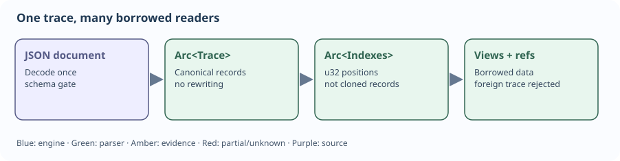

42 · TP-2 · Compact, position-only indexes #
Key terms #
| Term | Plain meaning |
|---|---|
| Position index | A small table that says which position in the original trace array contains a record you asked for. |
| Borrowed result | A view of the existing saved record, not a newly invented or copied instruction event. |
>
Level 1 · Intuition #
A large trace repeats instruction addresses and source lines thousands of times. Scanning every event for each question would waste time; copying every record into lookup tables would waste memory. TP-2 builds keys → integer positions once and borrows original records when queried. It does not create an address→allocation provenance index.


Level 2 · What is indexed #
When TraceStore is created, TraceIndexes::build makes lookup tables once. ExecutionsIndex answers “at which saved event positions did instruction 12 appear?” It keeps a compact range of position numbers for each compiled instruction. SourceIndex answers “which recorded events had this exact file path and line?” It also lets you go back from an instruction to recorded source positions. AllocationIndex answers “where are the events, final block and lifetime for allocation ID 7?” MetadataIndex locates DWARF and Clang source/type records by their IDs. These tables store numbers and keys, not second copies of instruction events, snapshots or raw bytes.
If you already have a snapshot's vector position, the parser can look it up directly. Other questions, such as “which snapshot has GDB stop ID 17?”, use a fast binary search only after checking that the imported stop IDs are in order. A broken order produces OrderingViolation, not a guessed answer. To show heap events between two saved snapshots, the parser uses their recorded running event counts. If an intermediate stop was never saved, that interval is only an approximate time window: it does not prove the event happened at the later stop. The index never treats equal filename endings or matching addresses as proven identities.
Mini example #
Disassembly instruction 12 may occur at instruction_events positions [5, 21, 36]. The index contains three u32 positions, not three copies of the event or one merged “executed once” record. instruction_execution_positions(12) returns that slice; instruction_executions(12) borrows canonical event records at each position. instruction_id=12 is not event 12.
Level 3 · Source and query contracts #
src/trace_parser/indexes.rs::{TraceIndexes, ExecutionsIndex, SourceIndex, AllocationIndex, MetadataIndex, OrderingFacts}.TraceStore::{instruction_event, instruction_range, events_at_checkpoint, snapshot_at_stop, instruction_executions, executed_events_for_source, heap_events_for_allocation, allocation_lifetime}insrc/trace_parser/mod.rs.
let positions: &[u32] = store.heap_event_positions_for_allocation(allocation_id);
for &position in positions {
let heap_event = &store.heap_events()[position as usize];
assert_eq!(heap_event.allocation_id, allocation_id);
}This excerpt assumes store and allocation_id are defined. It visits recorded heap-event positions without confusing them with event_id, stop IDs or allocation IDs; the executable usage sample also handles empty traces and paginates. TraceIndexes::estimated_bytes() is a rough logical estimate of index structures, not process RSS. In the Stage 1 audit the 900-snapshot/3,143-instruction trace had ~28,369 estimated index bytes, ~1.13 ms median index build and ~17 MiB parser-process RSS after indexing (process includes trace, runtime and buffers; workload-specific).